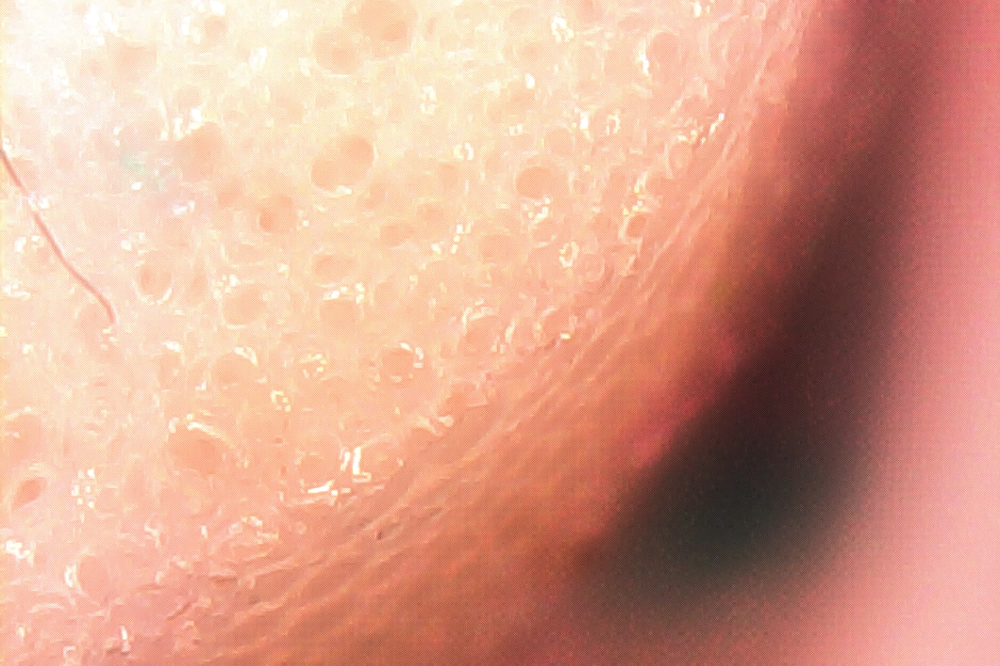
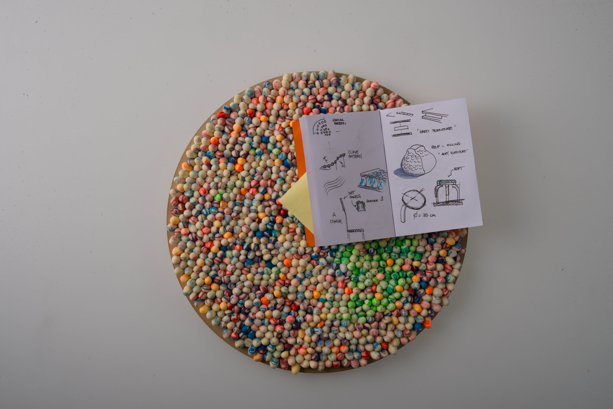
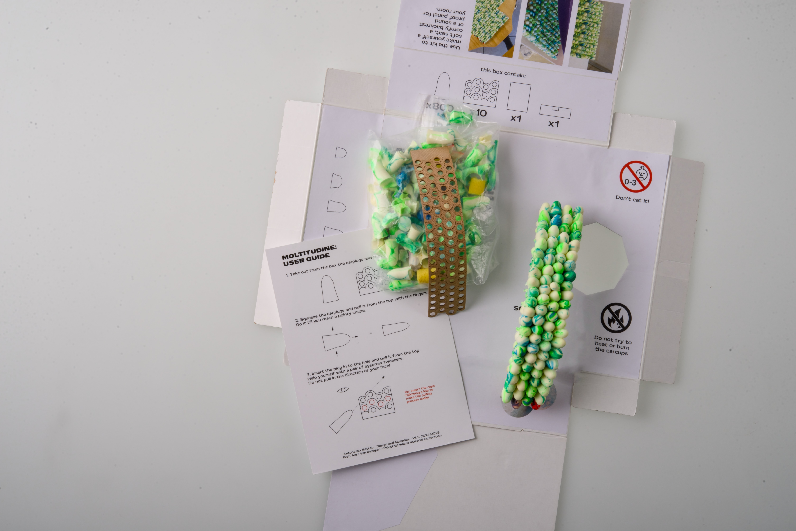

MOLTITUDINE
2024MOLTITUDINE is a material exploration of a new surface, where waste from the earplug industry with shape memory characteristics are repurposed to create a soft and colorful surface.
The earplugs are embedded in a Kraftplex matrix (a glue-free multilayer paper material), allowing the possibility of separating the matrix from the polyurethane foam components, facilitating future destructive disassembly (using water paper fall apart easily).
The project makes possible to reuse pre-consumer waste in polyurethane foam that would otherwise be destined for waste-to-energy or landfill. The project also develops from an innovative method: only after the study of the waste and its characteristics (even on a microscopic level) the developement of the design start.
The packaging designed for the project consists in a do-it-yourself kit concept, where the final user can build the surface and "hack" a seat or backrest.



